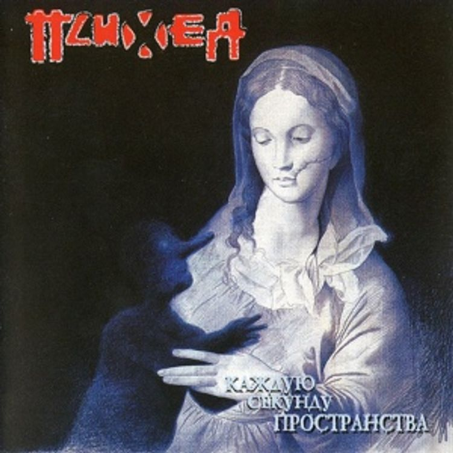
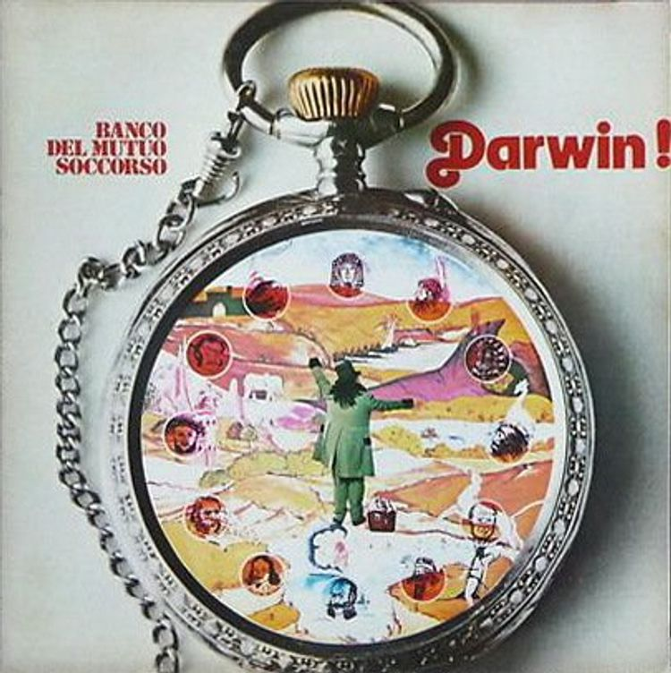
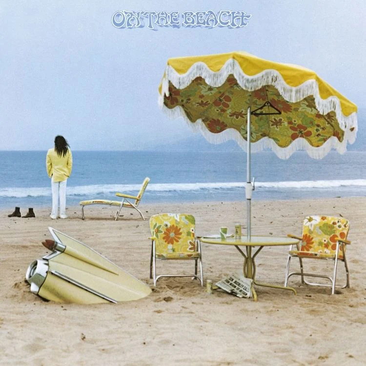

im a big fan of music, so id like to recommend, review and rate some albums here
im giving reviews of the albums so im cool under the law!(hopefully, i do not claim ownership of these albums!!!) clicking on the album cover art will lead you to the albums bandcamp page, so please consider purchasing the albums!
Каждую секунду пространства, by PSYCHEA

this is a russian metal album that pushes a lot of boundaries, kinda putting it on the edge of nu-metal. it has a lot of screamo-type vocals that are balanced out by a kind of melodic rap style that is used interchangeably and sometimes at the same time. the instrumentation of the album is incredibly heavy on bass during the more melodic rapping segments, only bringing in a heavily distorted guitar to hit some sick riffs and chords during the screaming parts or during bridges. this is one of the only metal albums ive heard to use the amen break, which surprised me. id say the best track on here is easily 7, which combines a thrashy type of metal with a very distinct punk sound and a very nice breakdown at the end. my least favorite is 13, which is just obnoxious to listen to from the very start because of this weird sound effect they use, and the vocals in this song are plain annoying and kind of nasaly, not being helped by the truthfully very boring instrumentation which is very unusual for this album, not much on here feels very derivative, but this just sounds like something i could hear from any garage band. dont get it twisted though, i love the rest of the 15 songs here, its just that this song is such an outlier i really felt the need to talk about it at length.
★★★★/5
Darwin!, by BANCO DEL MUTUO SOCCORSO

this is an italian prog rock album (which the italian prog scene is very interesting of itself and full of history) that is incredibly interesting, full of revolutionary ideas for the time it was released, being 1972. this album artfully mixes more classical sounds such as piano and lovely opera-like singing with incredible riffs on guitar and flourishes from synthesizers. this album holds tension and releases it very well. however, there are times where certain musical phrases are simply held too long and you are just left wondering why they felt it was needed to make such repetitive sections so long. this is all overshadowed by the pure brilliance on display in this record though, especially on songs like '750.000 anni fa... l'amore?' which is maybe one of the most beautiful songs i have ever heard, leaning mostly into the piano and opera-like singing i mentioned before, letting you settle into the song until it slaps you in the face with a heavy synth, then transitions back into the first part and then hits its musical peak. this is one of the most well rounded albums i have ever heard.
★★★★★/5
On the Beach, by NEIL YOUNG

on the beach is a classic album that really needs no introduction, so i wont give it one. i love this album so much with its incredibly melancholic and depressing sound. but thats where my problem is with it is, the album sounds way too happy for the first two songs! i know thats kind of weird to say, and i do really like 'Walk On' and 'See the Sky About to Rain' but they just dont feel like they fit the album at all. theyre not exactly happy songs, but when im in the mood to listen to this album and i put it on, 'Walk On' just kind of kills the vibe, they make me feel optimistic for whatever reason. 'Walk On' really just sounds happy-go-lucky to me, and the song saying "walk on" as its lyrics just feels really motivating, which is not what i want when i put on this album. i feel like the album truly starts on the third song, 'Revolution Blues' which is my favorite. i love the use of all the instruments here, because they are used sparingly (its not quite minimalistic, but very simple) but an insane amount of mileage is gotten from them. the bassline here in my opinion is what truly gives the song such a distinct feel, which i am biased because im a bass player (and the guitar compliments the song incredibly too), but the bass is just so unapologetically bluesy. 'On the Beach', 'Motion Pictures(For Carrie), and 'Ambulance Blues' are all incredible as well, all making you feel isolated in a sense.